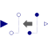

BackSampleShift the clock of the Real input signal backwards in time (and access the most recent value of the input at this new clock) |

|
Information
This information is part of the Modelica Standard Library maintained by the Modelica Association.
This block shifts the first activation of the clock of the output y by fraction backCounter/resolution of the period (or for a non-periodic signal by a fraction of the last interval) before the first activation of the clock of u. The output y is set to the last available value of the input u. Here, backCounter and resolution are positive Integer parameters.
To be more precise: The block constructs (conceptually) a clock “cBase”
Clock cBase = subSample(superSample(u, resolution), backCounter)
and the first clock tick of y is shifted before the first tick of the clock of u, such that this duration is identical to the duration between the first and second clock tick of cBase. Before the first tick of the clock of u, the block outputs the value of parameter y_start. After that, the block returns the last available value of u.
Note, for EventClocks there is the restriction that block BackSample can only shift the number of ticks of the EventClock clock, but cannot introduce new ticks, due to the restriction of operator superSample on EventClocks.
Also note, that this block does not simply shift the signal in time, since only the value of u from the last tick of the clock of u is used for the output. In particular, a BackSample block following a ShiftSample block cannot be used to recover the input signal of ShiftSample (for a causal system this is impossible).
Example
The following
example
samples a sine signal with a periodic clock of 20 ms period,
shift-samples it with shiftCounter = 4 and resolution = 3 and then back-samples it with backCounter=4 and resolution = 3:
 |
 |
|
| model | simulation result |
The first activation of output y of block backSample1 is shifted (4/3*20ms) before the first activation of output y of block shiftSample1. As a consequence, the activation times of the output y are coincident with the input signal of the shiftSample1 block. However, as described above, the output of block backSample1 does not recover the original sampled sine signal! For the first two ticks the output holds the value of the parameter y_start = 0.5. After that the output at a clock tick of block backSample1 is the last value of the output of the shiftSample1 block. The parameter values y_start = 0.5, shiftCounter = 4 and resolution = 3 are visible at the bottom of the icon.
Parameters (3)
| backCounter |
Value: 0 Type: Integer Description: Numerator of shifting formula |
|---|---|
| resolution |
Value: 1 Type: Integer Description: Denominator of shifting formula |
| y_start |
Value: 0 Type: Real Description: Value of output y before the first clock tick of the input u |
Connectors (2)
| u |
Type: RealInput Description: Connector of clocked, Real input signal |
|
|---|---|---|
| y |
Type: RealOutput Description: Connector of clocked, Real output signal (clock of y is faster than clock of u) |
Used in Examples (1)
|
Modelica.Clocked.Examples.Elementary.RealSignals Example of a BackSample block for Real signals |